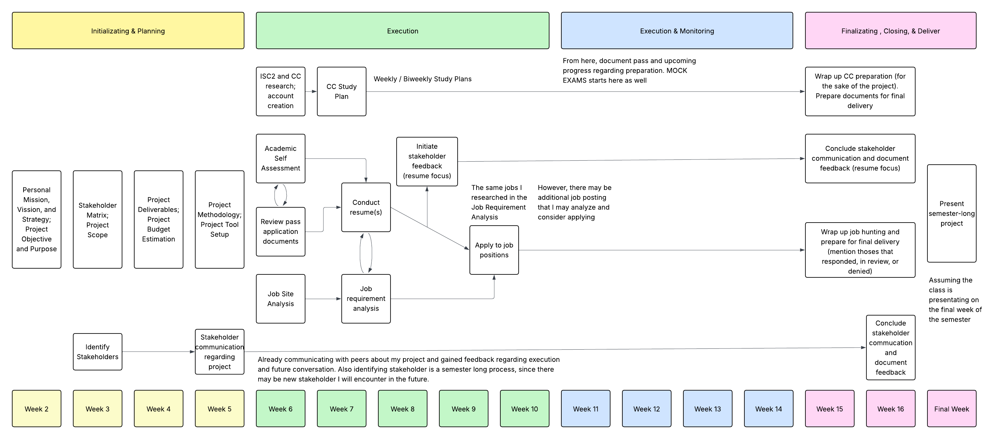
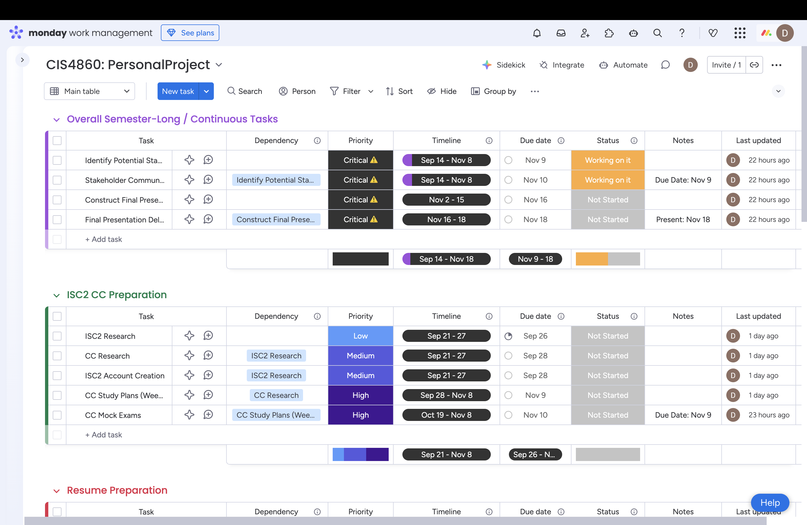
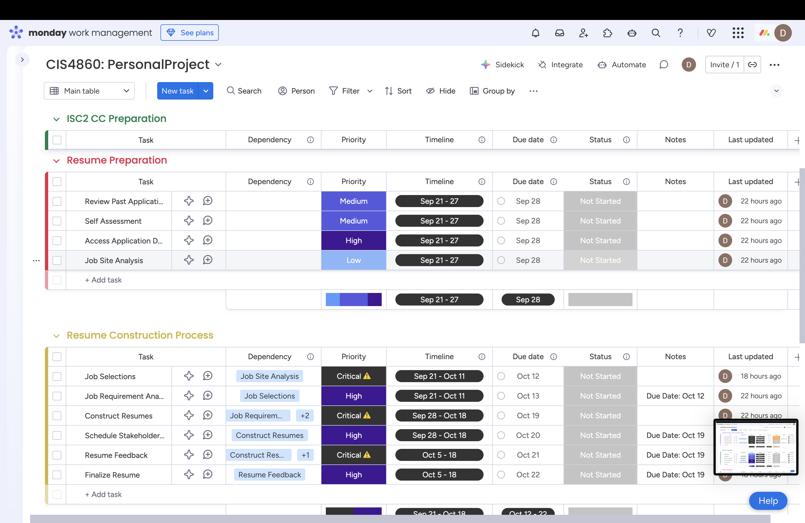

Job Hunting - IS/IT/Cybersecurity Internship/Part-Time
Project Charter - Managing IT Projects Course
Student Information
📋 1. Project Title & Description
Project Title: Job Hunting - IS/IT/Cybersecurity Internship/Part-Time
- This semester-long project will focus on job hunting to prepare and apply to internships/part-time opportunities in relation to my studies.
- This will involve me conducting a self-assessment of all my academic achievements, creating and tailoring application documents based on job requirements, communicating with professors and peers to increase confidence in applying to positions, and getting feedback on resumes and cover letters from stakeholders (professors, counselors, peers, etc.).
- This project will implement the cybersecurity knowledge I've learned thus far and bring me closer to my mission of finding working opportunities.
🎯 2. Vision, Mission & Strategy Alignment
Personal Mission Connection:
- This project supports my mission of graduating and finding meaningful work opportunities in the CIS field.
- By preparing application documents, gaining feedback, and applying to internships, I am working productively toward the same goal my mission highlights: pursuing opportunities that interest me while learning and growing from new experiences.
Vision Alignment:
- This project supports and aligns with my vision by helping me secure an internship or part-time role in the CIS field.
- Finding, applying for, and securing a position through this project will move me toward financial stability while also providing valuable real-world experience.
Strategic Goal Support:
- Conducting a job search will advance specific strategies, mainly expanding my network and self-learning.
- By engaging with my stakeholders, I will grow and establish a great network with individuals I can rely on now and in the future.
- Furthermore, this project will motivate me to conduct study plans and review cybersecurity concepts to ensure that my knowledge in this area meets manager and job requirements, and positions me to confidently pursue certifications in the future.
💼 3. Business Case & Justification
Professional Value:
- Performing and completing this project will directly benefit my future career.
- I will learn new skills and strengthen existing ones throughout the execution of this project.
- It will also require me to engage with multiple stakeholders, thus building valuable connections and expanding my professional network.
- In addition, I will tailor application documents to specific job requirements, demonstrating commitment and genuine interest in each position I apply to.
Personal Value:
- This project will help me grow in confidence, which I have struggled with in the past.
- I often compare myself to others and their experiences, which fuels my imposter syndrome.
- I will gain a supportive environment that increases my self-worth by stepping out of my comfort zone, expanding my network, and highlighting my academic achievements.
- With this growing confidence, I can focus more clearly on my journey and continue following my mission and vision.
Learning Outcomes:
- Creating and tailoring resumes, cover letters, and portfolios.
- Strengthening technical skills and developing effective study plans.
- Showcasing and highlighting my experiences at networking events or through digital platforms like my portfolio and LinkedIn.
- Strengthening my ability to communicate confidently at both professional and personal levels — whether in follow-ups, expressing interest, or casual conversations.
📏 4. High-Level Scope
Copy and paste your scope document content from your previous assignment into the placeholders below.
✅ In Scope for Semester Project
- Conducting self-assessments of my academic skills, knowledge, and experiences
- Using resources offered by the CSULA Career Center for resume reviews, interview practice, and job search support
- Communicating with faculty, students, and professionals for guidance and feedback
- Tailoring resumes, cover letters, and other application documents to specific job postings
- Reviewing CIS course materials to highlight and evidence relevant knowledge and skills
- Researching companies and analyzing job requirements to understand business values and processes
🗺️ Roadmap Items (≤ 6 Months After Semester Ends)
- Following up with professors and peers regarding ongoing career progress
- Attending networking events to expand professional connections
- Focusing on new semester courses and analyzing additional skills gained
- Conducting hands-on activities to strengthen cybersecurity concepts
- Preparing for the ISC2 CC Certification exam
- Developing a professional portfolio (e.g., GitHub projects, personal website)
❌ Out of Scope
- Applying to mid-to-high level IS/IT/Cybersecurity Jobs
- Long-term (vision statement)
- Taking the ISC2 CC Certification (or any certification)
- Not feasible within the semester timeframe
- Conducting a High-Level Resume (2-page)
- Too big and challenging to conduct at present
- Applying to out-of-state positions
- Too big (even if it’s an internship)
👥 5. Stakeholder Register
Copy and paste your stakeholder information from your previous assignment. Include both the table and your power-interest grid.
| Stakeholder | Category | Role/Interest | Power | Interest | Engagement Strategy |
|---|---|---|---|---|---|
| Family | Internal | Provide support and motivation throughout the project timeline. | Low | High | Keep Informed: Weekly progress conversations, feedback and monitoring, and a supportive environment (motivation). |
| Friends | Internal | Provide support and share work experiences to set expectations for a working environment. | Low | Medium | Keep Informed: Bi-weekly check-ins on progress, discuss work experiences and job expectations. |
| Professors | Internal | Guide and provide feedback on application documents; support the project concept; share professional experiences (how they started, how they grew). Contacts: Daniel Razmjou (drazmjo2@calstatela.edu), Arun Aryal (aaryal@calstatela.edu). | Medium | High | Manage Closely: Weekly-to-biweekly discussions on progress; feedback on resumes/cover letters; guidance on professional display (e.g., LinkedIn). |
| Hiring Managers | External | Ensure I’m qualified, meet job requirements, and fit team needs. | High | High | Manage Closely: Align to job requirements; tailor application materials; engage professionally and promptly. |
| Classmates | External | Provide professional support and share insights from their work experiences. | Low | Medium | Keep Informed: Weekly-to-biweekly progress conversations; advice for interview preparation and job readiness. |
| Clubs (e.g., CARP) | External | Support the project and provide insight into working environments (may not be CIS-related). | Low | Medium | Monitor: Monthly progress conversations; supportive environment; gain insight into workplace expectations. |
| Professionals (Networking Events) | External | Provide career guidance, opportunities, and general support. | Medium | High | Manage Closely: Build strong professional relationships; practice elevator pitch/LinkedIn; request feedback on application documents. |
| ISC2 | Regulatory | Guide and support CC certification preparation (rules, format, resources). | High | Low | Keep Satisfied: Follow rules and procedures; use provided resources; create appropriate study plans. |
| Career Counselors | External | Provide professional and personal guidance, resources, and notifications for networking events. | Medium | Medium | Keep Informed: Deep discussions on job hunting; resume/cover feedback; use resources (resume builder, mock interviews); networking advice; upcoming events. |
Power-Interest Grid Visualization
- ISC2
- Hiring Managers
- Professors
- Professionals (Networking Events)
- Clubs (e.g., CARP)
- Family
- Friends
- Classmates
- Career Counselors
📦 6. Deliverables & Definition of Done
A Well-Constructed Resume(s)
- SMART Description: Create 1-page resumes aligning my experiences with job requirements; key step toward landing interviews; completion by mid-semester.
- Definition of Done: Reviewed by multiple stakeholders; tailored to job requirements; accurately reflects my academic experiences.
Increase Professional Network
- SMART Description: Communicate with stakeholders at campus and/or networking events; expand my network, measured by before-and-after comparison; goal: maintain long-term connections; metric will conclude by the end of the semester.
- Definition of Done: Initiated conversations with new stakeholders; work insights gained; added LinkedIn connections; established trusted relationship.
ISC2 CC Preparation
- SMART Description: ISC2 CC certification preparation by conduct study plans; time and progress will be documented weekly; increase expertise and knowledge for security focus positions; preparation expected to be completed by mid-to-end of semester.
- Definition of Done: Study plan documented; resources reviewed; professional guidance sought; mock exams completed.
Applying to Job Positions
- SMART Description: Analyze job requirements and apply to positions based on qualifications; track applied jobs; final steps toward achieving my mission: landing a CIS position; completion by end of semester.
- Definition of Done: Ensure application documents aligned with requirements; applications submitted; engaged in genuine conversations with hiring managers; mock interviews completed.
💲 7. Budget Estimation
Labor Costs
The primary labor cost for this project is my own effort in developing deliverables, networking, and preparing application materials. Based on my WBS and duration estimates, I expect to spend approximately 72–96 hours over the semester. Using a conservative student/entry-level market rate of $20/hour, this equates to a labor cost range of $1,440–$1,920.
| Role | Hours | Rate | Estimated Cost |
|---|---|---|---|
| Student PM/Analyst (self) | 72–96 | $20/hr | $1,440 – $1,920 |
Equipment & Software
| Item | Description | Estimated Cost |
|---|---|---|
| GitHub Pages / Notion / Google Sheets | Hosting and tracking tools for portfolio and application pipeline | $0 |
| LinkedIn Learning | Self-study videos for cybersecurity refreshers | $0 (via CSULA access) |
| Microsoft Office (optional) | Productivity suite for document authoring (or use Google Docs) | $0–$60 |
Materials
| Item | Description | Estimated Cost |
|---|---|---|
| Resume Printing | Hard copies for networking events/interviews (as needed) | $10–$20 |
| ISC2 CC Prep Materials | Optional practice tests and study guides for certification preparation | $0–$60 |
Services
| Item | Description | Estimated Cost |
|---|---|---|
| Career Center Services | Resume reviews, mock interviews, advising | $0 (included) |
| LinkedIn Premium (optional) | Applicant insights, InMail, and networking tools (1 month) | $40 |
| Networking Events (transport/fees) | Local transit, parking, or entry for on/off-campus events | $20–$40 |
| Workshops/Meetups (optional) | Professional sessions or student org events (if applicable) | $0–$20 |
Contingency & Risks
Because this project primarily uses free student resources, overall budget risk is low. A 15% contingency reserve is included to cover unexpected costs (e.g., materials, transportation, or optional services). Based on the estimates above, this contingency amounts to approximately $150–$250.
- Risk 1 – Certification prep costs exceed plan: Mitigate by relying on free LinkedIn Learning and CSULA materials before purchasing guides.
- Risk 2 – Event transportation/fees higher than expected: Mitigate by prioritizing free on-campus or virtual events.
- Risk 3 – Additional printing or supplies needed: Mitigate by using digital distribution when possible and printing selectively.
Budget Summary
| SUBTOTAL DIRECT COSTS | $1,805.00 |
| Contingency Reserve (15%) | $270.75 |
| TOTAL PROJECT BUDGET | $2,075.75 |
Budget Breakdown
| Category | % of Total | Amount |
|---|---|---|
| Labor | 80.9% | $1,680.00 |
| Equipment/Software | 1.4% | $30.00 |
| Materials | 1.7% | $35.00 |
| Services | 2.9% | $60.00 |
| Contingency | 13.0% | $270.75 |
Assumptions used for midpoint estimate: 84 hours at $20/hr; Equipment/Software $30; Materials $35; Services $60; Contingency 15% of direct costs.
🛠️ 8. Project Methodology
Chosen Methodology: Predictive (Waterfall)
- This project follows a Predictive methodology because most deliverables are fixed in scope and follow a traditional sequence of planning, execution, monitoring, and closing.
- Examples include resume drafts, ISC2 CC preparation, and job applications.
- While some deliverables will go through iterative feedback (such as resume revisions), the majority of tasks are planned in advance with clear outcomes.
- This makes the predictive approach the best overall fit for my project.

Figure 1: Predictive Project Plan Diagram (Weeks 2–Final Week)
🧰 9. Project Tools
Tool Selection Explanation
- I looked at three tools for my project: Microsoft Project, Trello, and Monday.com.
- At first, I thought about using Microsoft Project, but it felt like way too much for what I needed; there are a lot of features, and I knew I’d probably get overwhelmed.
- I also thought about Trello since I’ve used it before in other classes. Trello is great for quick boards, but it’s really better for Agile projects, and since my project is predictive, I felt it wasn’t the right match.
- I ended up going with Monday.com. When I first opened it, I felt overwhelmed too, but once I learned how to use it, I realized it was exactly what I needed.
- Monday.com let me group tasks by deliverables, set dependencies, and assign timelines; for example, applying to jobs depends on finishing resumes, which depends on resume prep.
- It took me a couple of days to set everything up, but now I have a timeline that matches my WBS and methodology diagram (and the class schedule), which keeps me organized through the semester.
Screenshots

Figure 2: Overall semester-long tasks and ISC2 CC preparation with dependencies and timelines.

Figure 3: Resume preparation and construction tasks with linked dependencies.
📝 Additional Charter Components
- Project Methodology Selection
- Deliverables & Definition of Done
- High-Level Timeline & Milestones
- Execution Plan Overview
- Risk Register
- Acceptance Criteria
- Project Manager Authority & Approvals